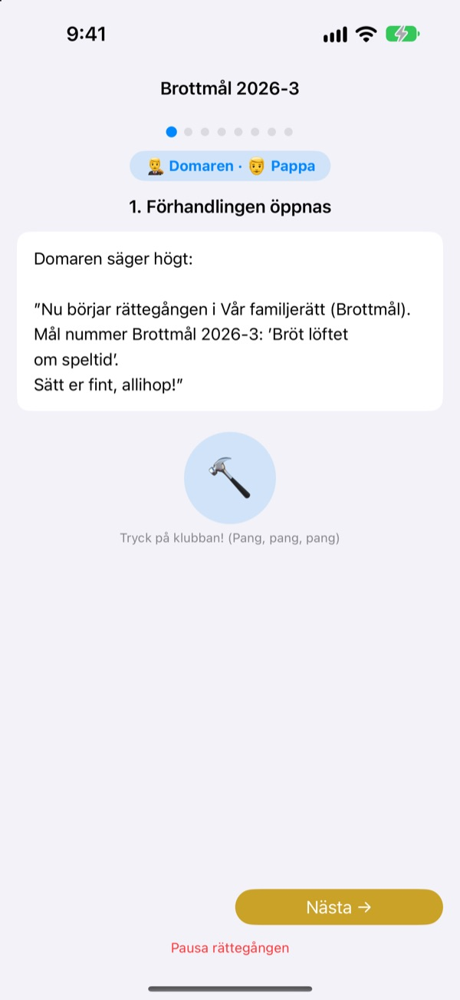
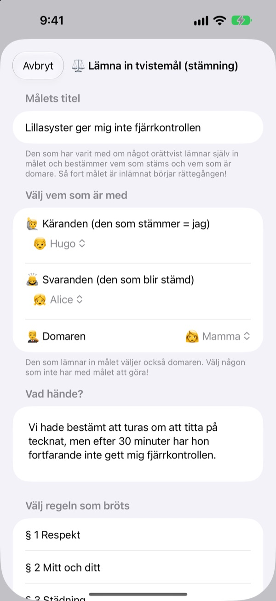
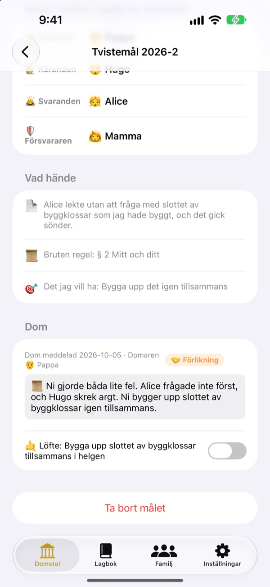
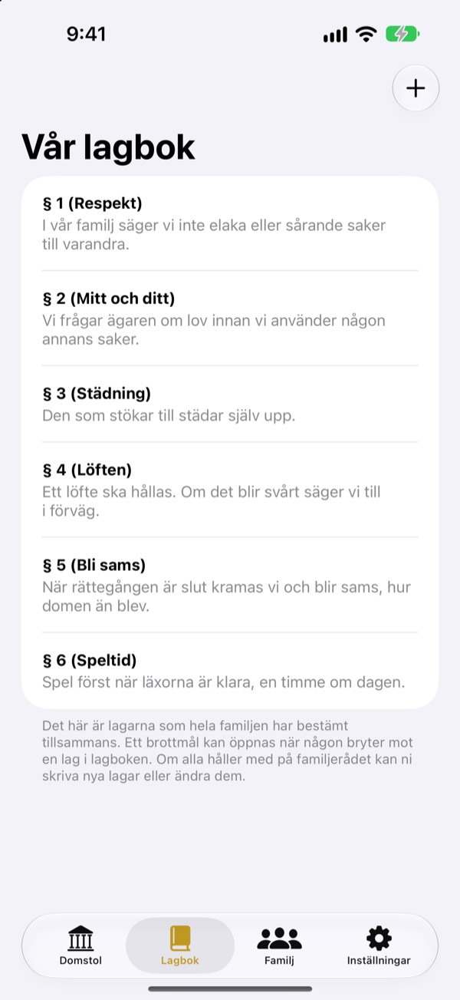

Orättvist?
Inga tårar, ta det i rätten.
Ditt barn lämnar själv in stämningen som kärande, och familjen delar på rollerna som domare och försvarare. Ett manus berättar i varje steg vems tur det är och vad som ska sägas, så redan första målet går som ett riktigt.
Ingen reklam, inga köp, ingen registrering. Allt stannar på den här enheten.

Håll en rättegång
Ett kort mål: ”Lillebror vill inte ge mig fjärrkontrollen.” Byt ordnivå högst upp, slå med klubban och starta timern. Det låter, så kolla volymen.
”Han började!” Trött på att alltid vara domare?
När det blir bråk är det oftast en vuxen som avgör. Den som förlorar gråter för att det känns orättvist, och den som vinner vet inte riktigt varför. Familjerätten ger barnen en ordning: berätta hela din sida och lyssna klart på den andra. Och domen slutar med ett löfte, inte bara ett straff.
Den som känner sig orättvist behandlad stämmer själv
Den som tycker att något är orättvist blir kärande och lämnar in stämningen. Vem målet gäller och vem som blir domare väljer den som stämmer. Barn kan till och med stämma mamma och pappa.
Såg du någon bryta en husregel? Bli åklagare och väck ett brottmål. Domare kan bara den vara som varken är kärande eller svarande.

Domar slutar med ett löfte
Till domen hör ett löfte eller ett straff som ni bockar av när det är klart. Avslutade mål blir era egna prejudikat.
Straffförslagen börjar med att ställa till rätta och laga känslor, mer reparation än bestraffning. Mindre spel eller tv kommer sist.

Ert hem, era lagar
Skriv ner reglerna ni är överens om som paragrafer, som respekt, att städa och att hålla löften, och lägg till eller ändra när ni vill. I stämningen väljer ni lagen som bröts.
”Lär dig om rätten” förklarar vad domare, kärande, åklagare och försvarare gör och hur en rättegång går till.

Igång i tre steg
- 1
Lägg till familjen
Ett namn och en emoji räcker. Inget konto.
- 2
Lämna in ett mål
Orättvist? Tvistemål. Husregel bruten? Brottmål. Välj sedan en domare.
- 3
Öppna rätten
Följ manuset, håll tiden med timern och avkunna domen med klubban.
Ord som växer med ditt barn
- Domaren
- Enkel: Bestämmaren · Rättssal: Rättens ordförande
- Käranden
- Enkel: Den som tycker det är orättvist · Rättssal: Käranden
- Svaranden
- Enkel: Den som ska svara · Rättssal: Svaranden
- Åklagaren
- Enkel: Den som sa till · Rättssal: Åklagaren
- Den tilltalade
- Enkel: Den som ska svara · Rättssal: Den tilltalade
- Försvararen
- Enkel: Hjälparen · Rättssal: Försvararen
- Tvistemål
- Enkel: Orättvist! · Rättssal: Tvistemål
- Brottmål
- Enkel: Brutet löfte · Rättssal: Brottmål
Välj ordnivå i Inställningar så byts orden på skärmen och i manuset på en gång. Prova Enkel för förskolebarn och Standard för skolbarn.
Vanliga frågor
Vilken ålder passar det för?
Alla barn som kan läsa kan vara med tillsammans med en förälder. Med manuset, tipsen och ordnivån Enkel kan även yngre barn delta när en vuxen läser högt.
Är det verkligen gratis?
Ja. Ingen reklam och inga köp som låser upp funktioner. I Inställningar finns en frivillig dricks till utvecklaren, men den låser varken upp eller låser något.
Behövs internet?
Nej. Rättegångar och arkiv fungerar helt offline. Bara för att skicka feedback från Inställningar behöver du internet och vara inloggad på iCloud.
Var sparas uppgifterna?
Familj, lagar, rättegångar och domar sparas bara på enheten och skickas inte till någon server. Utvecklaren får bara feedback du själv skickar och anonym användningsstatistik som inte kan kopplas till dig.
Kan jag säkerhetskopiera eller flytta till en annan enhet?
Använd ”Spara arkiv” i Inställningar för att exportera allt till en fil och ”Läs in arkiv” på den andra enheten, så är allt tillbaka precis som förut. Säkerhetskopior från den gamla webbversionen går också att läsa in.
Fungerar det på iPad?
Ja, på både iPhone och iPad. En stor skärm passar perfekt när hela familjen sitter runt.
Tänk om straffen blir för hårda?
När åklagaren yrkar på ett straff påminner manuset om att det inte ska vara för hårt utan går att genomföra. Förslagen börjar med att reparera: ställa till rätta, laga känslor och se det från den andras håll.
Hur raderar jag allt?
Raderar du appen försvinner alla mål på enheten. Inget har lämnat den, så inget finns kvar någon annanstans. Vill du få skickad feedback raderad, mejla oss.
Buggar, idéer eller något annat? Skriv till leeo@kakao.com. Du kan också skicka feedback från appens inställningar.